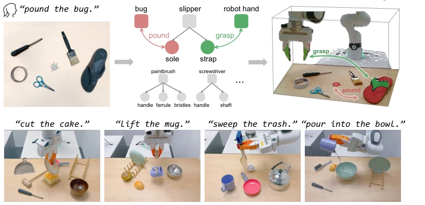
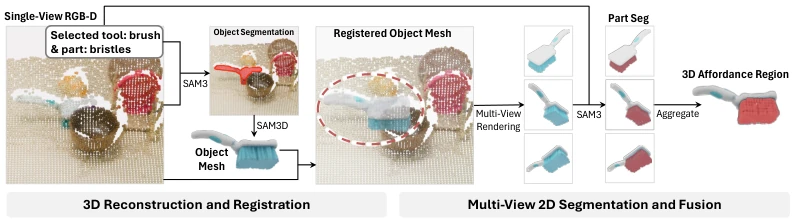
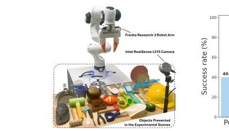
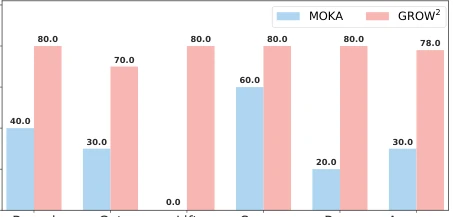
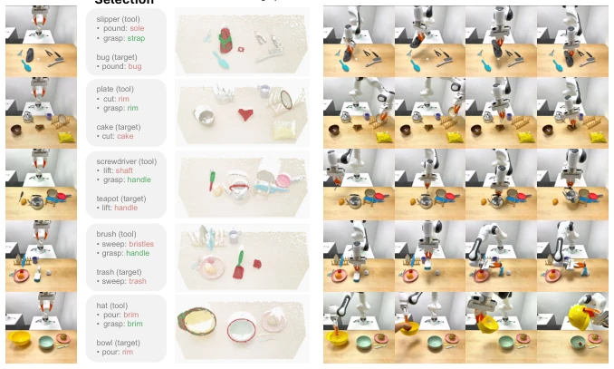
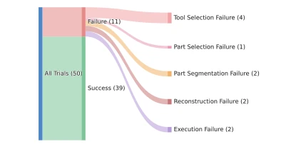
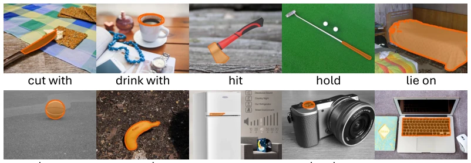
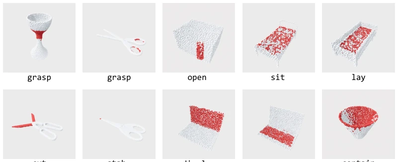
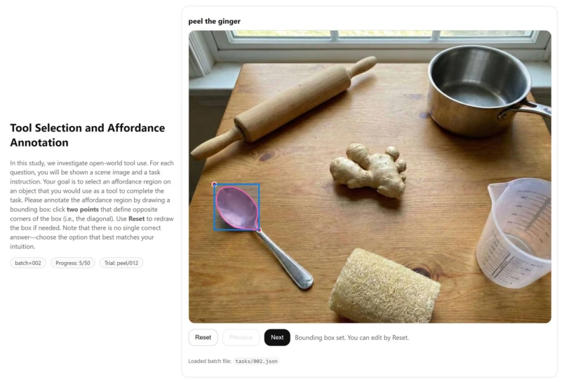
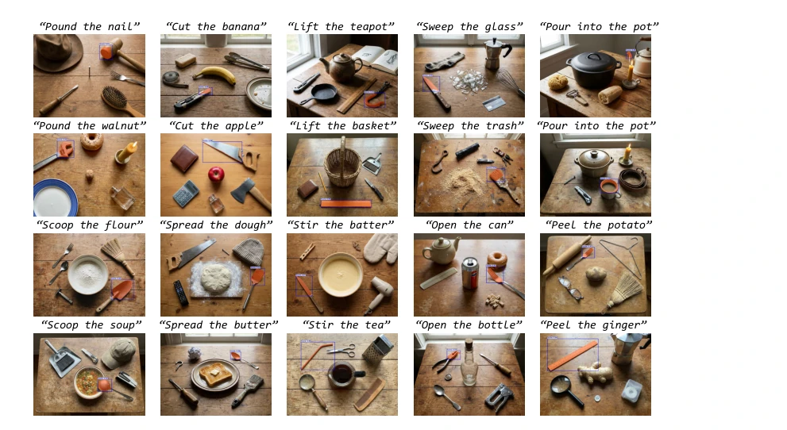

This GROW2 framework attempts to enable robots to locate tools with human-like "insight", such as using a plate to cut cake when a knife is unavailable. The core innovation lies in decoupling "tool selection" and "positioning" into semantic and geometric layers, leveraging VLMs and vision foundation models to directly tackle the task, thereby bypassing the need for large-scale data training. Advantages include strong zero-shot generalization, operability in both simulation and on real robots, and greater flexibility compared to traditional end-to-end methods; however, disadvantages include slow inference speed, requiring 16 seconds to process a single scene, and occasional VLM hallucinations leading to incorrect tool selection. Although touted as "zero-shot", it relies on powerful pre-trained models; whether this constitutes true "intelligence" depends on deployment costs, and the system remains sensitive to depth noise.
Robot tool use typically assumes tools are known [4, 5, 6] or functions are fixed [7, 8, 9], but in unstructured environments (such as homes), robots must self-select tools from open-category objects. Existing end-to-end methods rely heavily on large amounts of annotated data [10, 11, 12] and suffer from poor generalization. The challenges lie in: (1) semantic understanding, such as distinguishing the sharp edges of a plate from those of a dustpan; (2) geometric localization, which requires handling occlusion. This paper aims to address the open-world affordance grounding problem by bypassing data dependency through part abstraction.
方法Method
整体分为工具/部件选择（语义）和 3D 定位（几何）。首先用 VLM 解析指令，从场景中枚举物体及部件，通过少样本提示选择工具、目标及关键部件（如“手柄”、“刃口”）。接着进入几何层，利用 SAM3 分割物体，SAM3D 重建单视图 RGB-D 的 3D 网格，并通过 ICP 配准恢复尺度。随后将网格多视角渲染，用 SAM3 或 VLM 辅助分割部件掩码，最后通过 DBSCAN 融合多视角点云得到完整 3D 可操作区域，有效解决单视图遮挡问题。具体而言，该方法利用 VLM 的常识推理能力在语义空间筛选工具，再通过视觉基座模型将部件名称映射到 3D 几何区域，这种分层设计避免了端到端训练的数据瓶颈，使得模型能泛化到未见过的开放类别物体，同时通过多视角渲染和融合保证了 3D 区域的完整性。
The overall process is divided into tool/part selection (semantic) and 3D localization (geometric). First, a VLM parses the instruction, enumerates objects and parts from the scene, and selects the tool, target, and key parts (e.g., "handle", "blade") through few-shot prompting. Next, in the geometric layer, SAM3 is used to segment objects, SAM3D reconstructs 3D meshes from single-view RGB-D data, and ICP registration is employed to recover scale. Subsequently, the mesh is rendered from multiple views, SAM3 or VLM assists in segmenting part masks, and finally, DBSCAN fuses multi-view point clouds to obtain a complete 3D operable region, effectively addressing single-view occlusion issues. Specifically, the method leverages the VLM's common sense reasoning capability to filter tools in semantic space, then maps part names to 3D geometric regions via vision foundation models. This layered design avoids the data bottleneck of end-to-end training, enabling the model to generalize to unseen open-category objects, while multi-view rendering and fusion ensure the integrity of the 3D region.

Figure 1: GROW2 (GROunding Which and Where) decomposes open-world affordance ground- ing into two levels: (i) semantic selection of an appropriate tool and the task-relevant parts, and (ii) grounding the selected parts into 3D affordance regions. This decomposition enables GROW2 to leverage a series of foundation models and generalize to open-category objects.

Figure 2: 3D affordance grounding. Our method consists of two stages: (a) reconstructing and registering an object mesh from a single-view RGB-D observation and (b) rendering the registered mesh from multiple viewpoints, segmenting the selected parts in each view, and fusing the resulting masks into 3D affordance regions.
Testing was conducted on AGD20K, PIAD, and a self-built GROW2Bench. Simulation utilized SAPIEN + Franka, while real-world experiments used RealSense + Franka. Metrics included IoU and success rate. GROW2 achieved the highest IoU on GROW2Bench, with a simulation success rate of 86.7% and a real-robot success rate of 78%, outperforming baselines such as MOKA. Ablation studies indicate that multi-view fusion is critical for occlusion recovery. Limitations include high VLM inference latency, as well as failure cases involving incorrect tool selection or reconstruction errors, necessitating further optimization. The experiments covered five task types, including cutting and pouring, demonstrating robustness in complex interactions; although real-world depth noise affects performance, the reconstruction mechanism provides a degree of fault tolerance.

Figure 4: Real-world setup.

Figure 5: Average success rates (%) of robot tool use in the real world. We evaluate on 10 scenes for each task type. 5.3 Real-World Experiments

Figure 6: Qualitative results of real-world experiments. From left to right, the figure shows the task description, initial state, tool and part selection results, predicted affordance regions, and the real robot execution process.

Figure 7: Failure analysis.
其他图片Other Figures

Figure 8: Representative examples from the AGD20K benchmark. We visualize the affordances predicted by GROW2 using the orange regions in the images.

Figure 9: Representative examples from the PIAD benchmark. We visualize the affordances predicted by GROW2 with the red regions in the point cloud.

Figure 10: Web-based annotation interface for the construction of GROW2Bench.

Figure 11: Representative examples from GROW2Bench. We visualize ground-truth affordance regions annotated by human experts with the blue bounding boxes and the orange regions.